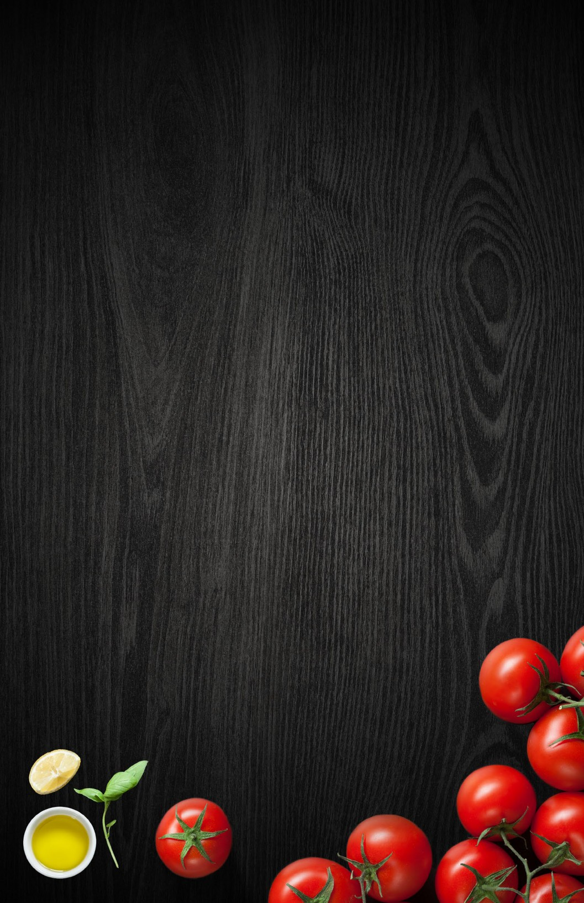
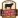
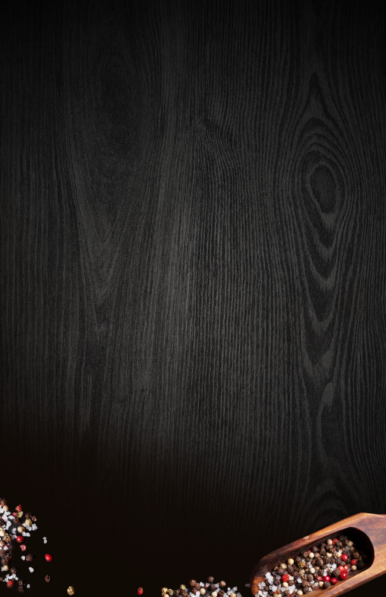

1st table
flour tortilla stuffed with cream cheese and roasted red pepper filling, served with sour cream 15
dusted calamari with roasted red pepper dip 16
mild, medium, hot, honey garlic, dry cajun, served with carrots and blue cheese dip
13
topped with bacon, green onion and diced red pepper served with crisp baguette coins to dip 16
seasoned ground beef, three cheese blend, with salsa, tomato, green onion and jalapeño 15
chicken nachos 16
deep fried, served with a cranberry reduction 15
build yourself bruschetta & black olive tapenade with almond crusted goat cheese 14
veal, pork and beef are hand formed to a classic rustic
1 lb 2 lb 24
served with a salad garnish and a spicy mango sauce 15
recipe, served traditionally with marinara and parmesan 15
house prepared soups & fresh salads
hearty soup of haddock, salmon, baby clams, corn and potato 10
rich deep broth topped with gruyère cheese 9
seasonal greens, vegetables and house- made dressing 10
egg, sliced mushrooms, tomatoes, bacon, crumbled goat cheese and toasted almonds with a warm bacon vinaigrette 15
pesto rubbed chicken breast atop fresh greens with bacon, asparagus, cucumbers, tomatoes and feta 17
top sirloin, fresh greens, toasted almonds topped with goat cheese, finished with
house-made dressing 19
roasted garlic dressing, smoked bacon and seasoned croutons 16 caesar salad only 12
romaine, tomatoes, cucumbers, red onion, kalamata olives, green peppers and feta cheese 15
thin crust gourmet pizza
smoked bbq sauce with caramelized onions, chicken breast, mozzarella cheese, topped with fresh reggiano parmesan and cilantro 18
portobello mushrooms, red peppers, red onions, spinach and goat cheese 16
calabrese salami, mushrooms and green peppers 17
ham, pineapple and banana peppers 17
a finely chopped mixture of mushrooms, red, green & banana peppers, calabrese, bacon and meatballs 18
all thin crust pizzas are topped with our own fresh, home style tomato sauce and mozzarella cheese

handcrafted sandwiches & burgers
aaa striploin, horseradish mayo, sautéed mushrooms, topped with crispy onions 20
bacon, lettuce, tomato, red pepper mayo and havarti cheese 16
traditionally prepared with cranberry infused mayo 16
main table

10 oz black angus striploin, sea salt seasoned fries served with portobello mushroom and
asparagus 30
6 oz filet, served with mashed potatoes, grilled asparagus and portobello mushroom 30
served with mashed potatoes, wilted kale, and seasoned vegetables 20
red wine braised beef with onion, carrots, mushroom and baby red potatoes topped with bacon and served with a crusty loaf 17
lunch size 11.5
on basmati rice, served with chickpea salad and warm naan bread 15
seasoned ground beef, carrots and peas in a rich gravy topped with cheddar mashed potatoes served with seasonal vegetables 16
red wine jus, mashed potatoes and seasonal sautéed vegetables 22
seasoned haddock served on a flour tortilla stuffed with pico de gallo, tex-mex cheese, avocado, cilantro, shaved green cabbage and sriracha cream 16
portobello mushrooms, red pepper, zucchini, red onions and goat cheese with a sun dried tomato aioli on
naan 15
potato rosti, creamed leeks, smoked bacon, wild mushrooms and red
wine jus 19.5
a mix of broccoli, red pepper, carrots, chili flakes, red onion, zucchini, portobello mushroom with garlic, olive oil and parmesan topped with asparagus spears 16
with chicken or salmon 20
shaved short ribs tossed with red onions, roasted cherry tomatoes in a demi glaze marinara sauce, topped with fresh ricotta and sliced scallions 19
topped with a maple glaze and served on a bed of wild rice with grilled vegetables 20
served with roasted garlic potatoes and seasoned heirloom carrots, topped with an herb compound butter 20
salmon, haddock and shrimp prepared in a white wine cream sauce in a puff pastry bowl, served with choice of grilled vegetables, house salad or fries 17

hand pressed patty on a potato scallion bun with crispy onions,
lettuce, vine-ripe tomato and pickle 16
our certified angus beef® burger with roasted red pepper, crispy onions and sharp gorgonzola 17
enjoy with your choice of house salad or fries
enhance with sweet potato fries, seafood chowder or caesar salad for 2.00
add cheese or bacon to your burger for 1.50 each
crisp haddock fillets prepared in a light beer batter served with fresh vegetable slaw 20
pad thai noodles tossed in a peanut sauce with shaved
carrots, broccoli, bean sprouts, and tofu, topped with scallions, cilantro, shaved cabbage and salted peanuts 18.5
served with mashed potatoes and seasoned vegetables, topped with caramelized onions and gravy 18
dessert table
with ice cream 7
with ice cream 7
